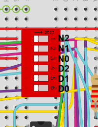
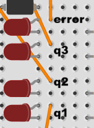
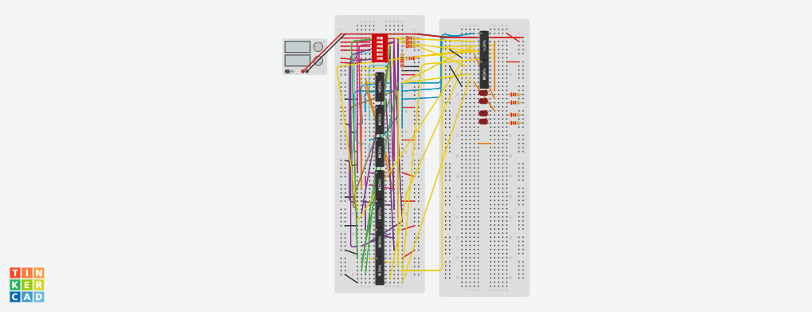

Welcome
This website showcases my Engineering 2213 digital logic portfolio projects, including combinational logic systems, arithmetic circuits, and my final design work. Each project includes a description of the circuit, design documentation, implementation evidence, and images of the work.
Portfolio 1: 3-Bit Combinational Divider
Project Title
3-Bit Combinational Divider
Topic
Binary Arithmetic
Description
This project involved designing a 3-bit combinational divider using digital logic. The goal of the circuit was to divide a 3-bit dividend by a 3-bit divisor and produce quotient outputs through combinational logic only. The design does not rely on registers, repeated subtraction over time, or clocked control. Instead, the outputs are determined directly from the input bits.
This project demonstrates binary arithmetic because it implements division logic at the gate level. In addition to quotient outputs, the circuit also includes an error output to indicate invalid input cases such as division by zero.
Inputs and Outputs
Inputs: N2, N1, N0 for the dividend and D2, D1, D0 for the divisor
Outputs: Q3, Q2, Q1 and error
Input and Output Layout
The following images show the labeled locations of the circuit inputs and outputs.


Design Documentation
The design process began by constructing the full truth table for the valid combinations of the 3-bit dividend and 3-bit divisor. After determining the correct outputs for each case, Boolean expressions were derived for the quotient outputs and the error output.
Simplification was carried out by factoring and reusing shared logic terms so the final circuit could be implemented efficiently with logic gates. The documentation for this project includes:
- truth table for dividend and divisor combinations
- derived Boolean expressions for Q3, Q2, Q1, and error
- Boolean simplification and shared product terms
- gate-level implementation
- component and chip usage
Design Decisions
One important design decision was to make the divider purely combinational instead of sequential. This keeps the output immediate and makes the project fit the binary arithmetic topic clearly. Another design decision was to include an explicit error output so undefined division cases are handled cleanly.
During development, shared logic terms were reused where possible to reduce gate count and simplify wiring. This improved the final implementation and made the circuit more practical to build and debug.
Parts / Components
The following components were used to implement the 3-bit combinational divider circuit:
- 1 5 V, 0.061 power supply
- 1 DIP switch SPST x 6
- 11 220 Ω resistors
- 1 hex inverter
- 7 quad AND gates
- 2 triple 3-input AND gates
- 2 quad OR gates
- 5 red LEDs
- 1 dual 4-input AND gate
- 1 triple 3-input NOR gate
Supporting Evidence
The following image shows the circuit implementation for the 3-bit combinational divider. Additional design evidence such as truth tables, logic derivations, and schematics can be added here as more documentation is completed.
- implementation image
- input and output labeling images
- truth table
- Boolean derivation work
- schematic or simulation link

Portfolio 2: 4-Bit Two's Complement Adder/Subtractor
Project Title
4-Bit Two's Complement Adder/Subtractor
Topic
Binary Arithmetic
Description
This project focused on the design of a 4-bit arithmetic circuit capable of performing both addition and subtraction. The circuit uses two’s complement arithmetic so that the same hardware structure can perform both operations. A control input determines whether the second operand is used directly for addition or complemented for subtraction.
This project demonstrates binary arithmetic because it implements signed arithmetic in hardware and shows how subtraction can be reduced to addition through two’s complement methods. The design also includes overflow detection so the circuit can indicate when the signed result is outside the representable 4-bit range.
Inputs and Outputs
Inputs: two 4-bit operands and an operation select input
Outputs: 4-bit result and overflow output
Design Documentation
The circuit was designed by starting from the structure of a ripple-carry adder. To support subtraction, XOR logic was used to conditionally invert the second operand when the subtract control is active, and the same control signal was used as the carry-in to implement the +1 required in two’s complement subtraction.
The documentation for this project includes:
- functional explanation of addition and subtraction modes
- logic for conditional inversion of the second operand
- adder structure and carry propagation
- overflow detection logic
- schematic and implementation details
Design Decisions
A major design decision was to use a single arithmetic circuit for both addition and subtraction instead of building two separate systems. This reduces hardware duplication and reflects how arithmetic units are commonly designed in digital systems.
Another important design decision was to include overflow detection, since signed two’s complement arithmetic requires more than just the final sum bits. This makes the circuit more complete and more useful as a demonstration of arithmetic logic design.
Parts / Components
Replace this section with the exact chips and components you used in your adder/subtractor. A typical implementation may include:
- XOR gates for conditional inversion
- AND gates
- OR gates
- full-adder structure or 4-bit adder chip
- LED indicators and resistors
- DIP switches and power supply
Supporting Evidence
This section should include public evidence of the project, such as screenshots, schematics, truth tables, logic derivations, or breadboard photos.
- simulation link
- schematic
- logic derivation screenshots
- truth table or sample test cases
- breadboard photos or video, if applicable


Portfolio 3: [Insert Project Title]
[Insert Project Title]
Add your project description here. Explain what the circuit does, what logic topic it demonstrates, and how it was implemented.


Portfolio 4: [Insert Project Title]
[Insert Project Title]
Add your project description here. Explain what the circuit does, what logic topic it demonstrates, and how it was implemented.


Final Design Project: Morse Code Decoder
Morse Code Decoder
This project involved designing a system capable of decoding Morse code input into readable output. The decoder interprets timing-based input patterns and converts sequences of dots and dashes into corresponding alphanumeric characters.